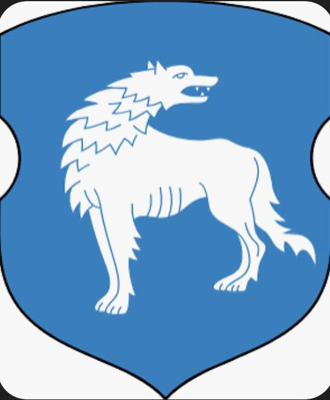
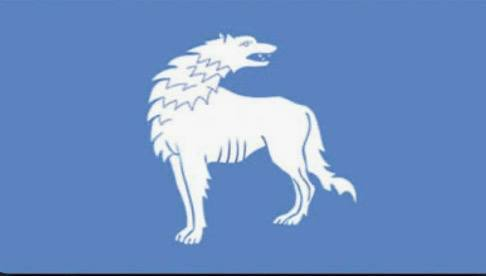
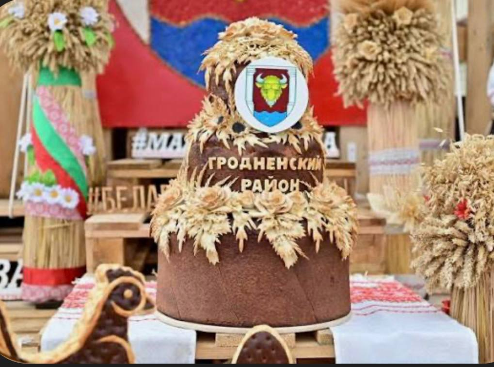
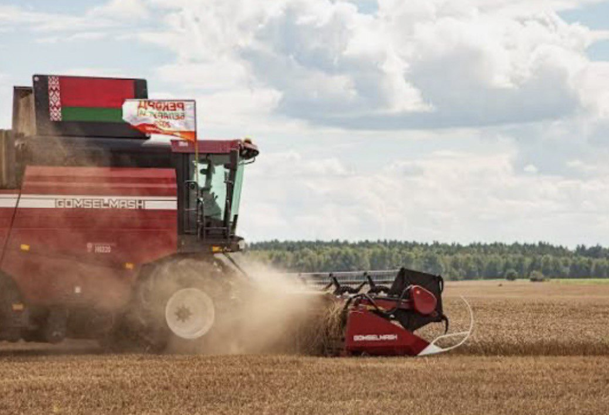
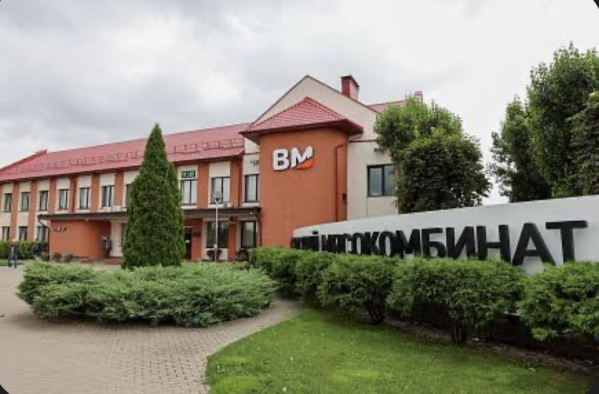
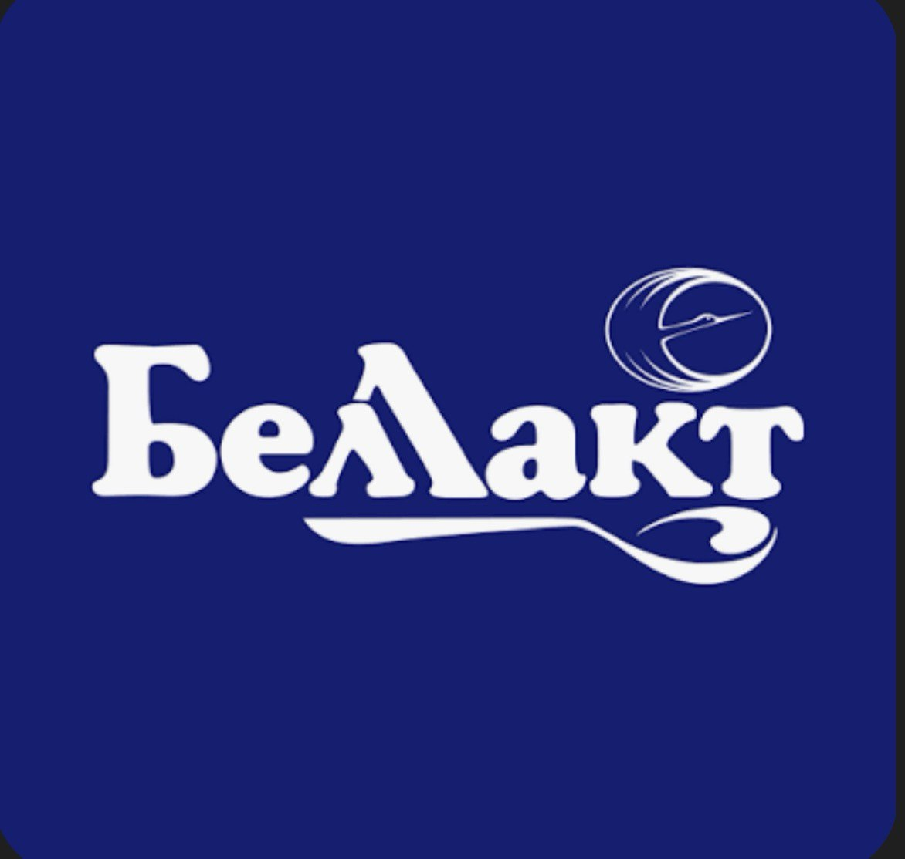
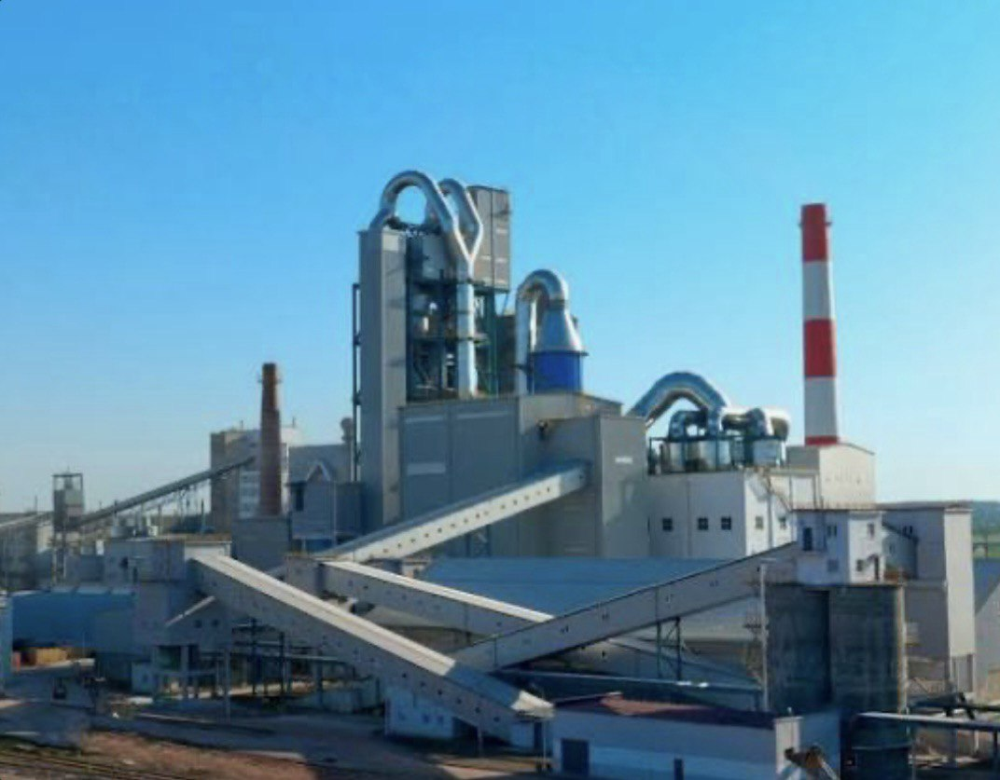

Город с богатой историей и живописными окрестностями.
Волковыск – один из старейших городов Беларуси, первое упоминание о котором относится к 1005 году. Город был важным центром в составе различных государственных образований, включая Полоцкое княжество, Великое княжество Литовское и Речь Посполитую. Волковыск пережил множество войн и исторических событий, оставивших свой след в его архитектуре и культуре.
Волковыск имеет свои символы, отражающие его историю и традиции:
Герб: На гербе изображен волк, держащий в лапах золотой ключ. Волк символизирует название города, а ключ – его стратегическое значение.
Флаг: Флаг представляет собой полотнище с изображением герба города. Флаг символизирует гордость и принадлежность к городу.
Праздник собрал тружеников села Гродненской области и включал в себя ярмарку, презентацию подворий районов, чествование передовиков и концертную программу с участием артистов из Беларуси и России, а также фейерверк.
Комбайн GOMSELMASH GH810 намолотил 391 тонну пшеницы за 8-часовую смену.
Волковыск – это небольшой, но уютный город с развитой промышленностью и сельским хозяйством. В городе расположены предприятия пищевой промышленности, деревообработки и производства строительных материалов. Волковыск предлагает своим жителям и гостям широкий спектр услуг, включая образование, здравоохранение и культуру. Город активно развивается, сохраняя при этом свою историческую самобытность. Узнать больше о жизни города можно на официальном сайте Волковысского райисполкома.
  Пока фантазия, привет Василиса